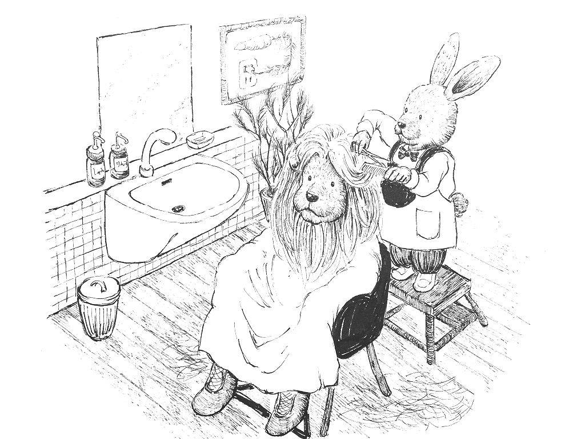
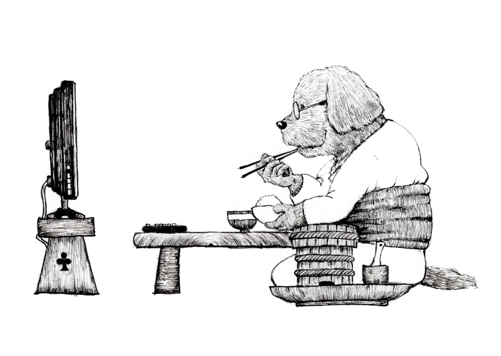
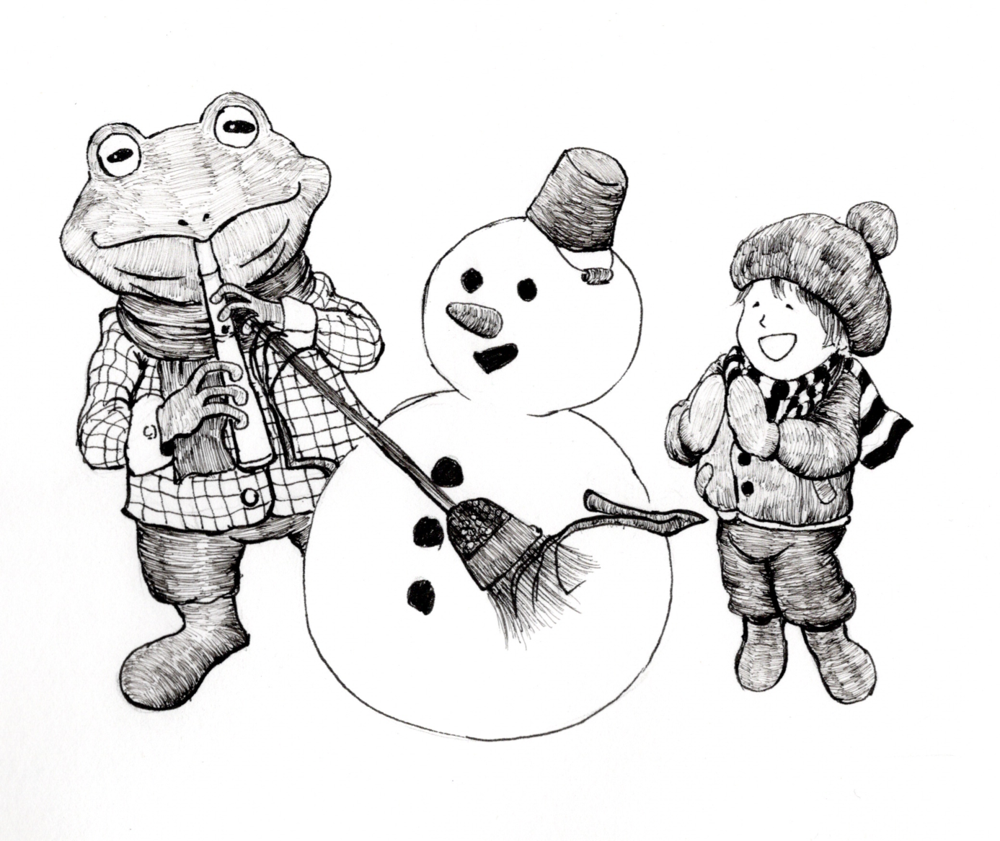
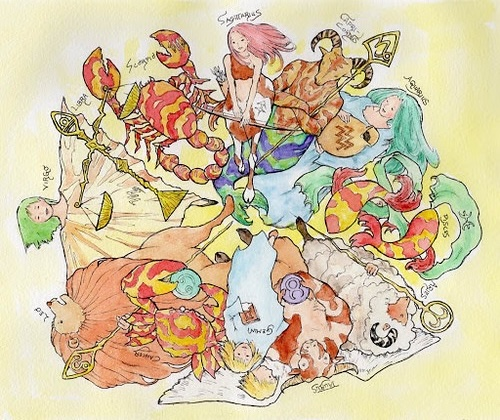
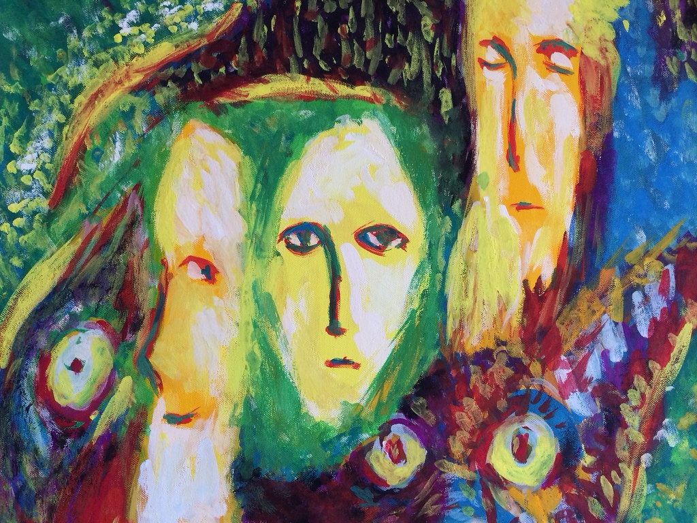
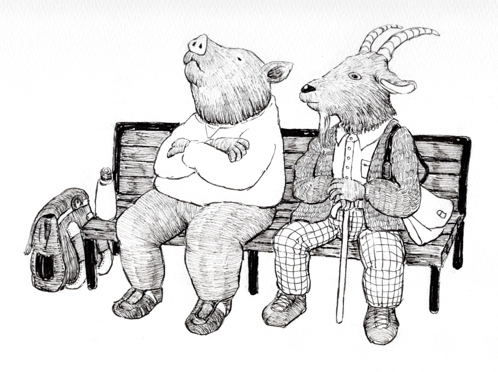
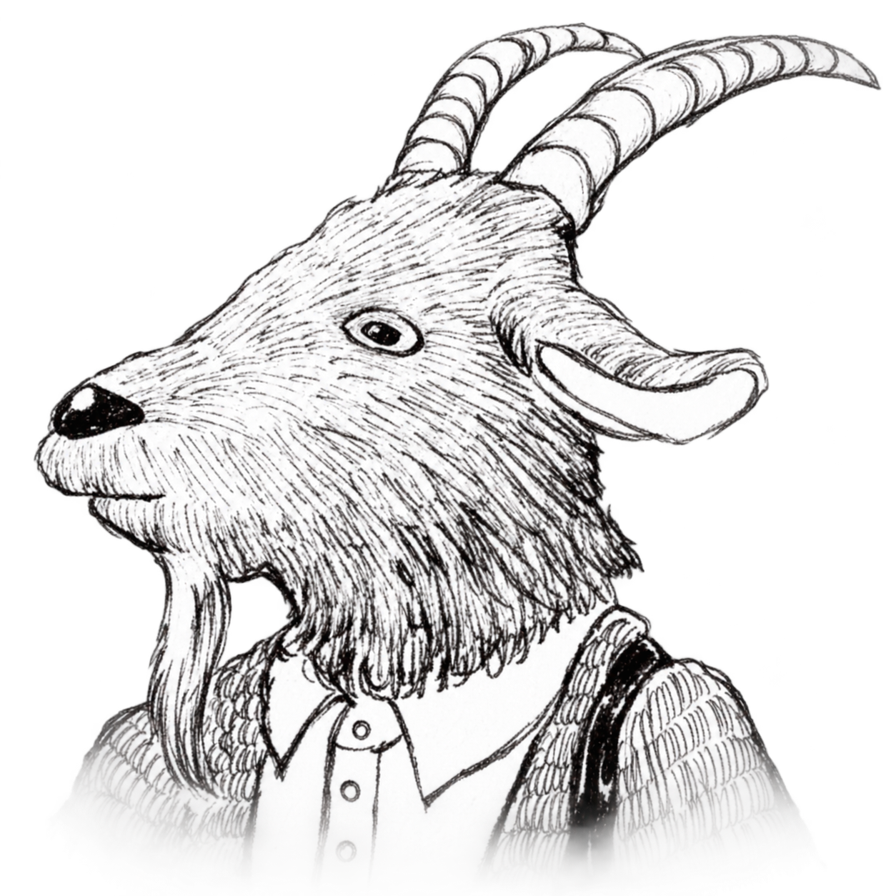
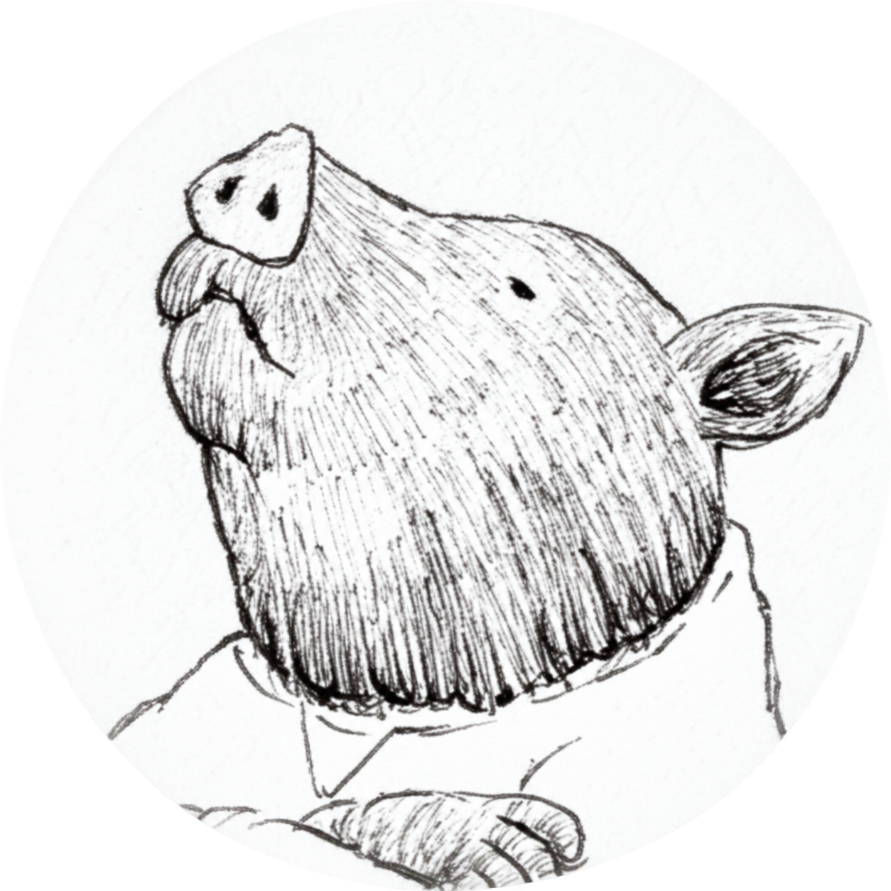

01
「体には、治ろうとする力があります」
傷ができれば塞がる。疲れれば眠くなる。
体には、もともと治ろうとする力が備わっています。その力は、私たちが意識していない間も働き続けています。
ミクロコスモヒーリングは、その目覚めを力強く後押しします。
傷ができれば塞がる。疲れれば眠くなる。
体には、もともと治ろうとする力が備わっています。その力は、私たちが意識していない間も働き続けています。
ミクロコスモヒーリングは、その目覚めを力強く後押しします。

腰が痛くても、最初に変わるのは首かもしれません。呼吸や眠りから変わることもあります。
体には、体なりの順序があるのです。
いつ・どこを・どこまで治すか。その主役は、ヒーラーである〈私〉ではなく、〈体〉なのです。
ヒーリングを受けるために、特別な準備は必要ありません。
仕事をしたり、家事をしたり、いつも通りにお過ごしください。
体がリラックスしたときや、眠っている間にもヒーリングは浸透します。
感じ方やタイミングには個人差があります。


同じ不調が繰り返されるとき、心の癖や考え方が、体に現れていることがあります。
体の不調が、思いがけず自分自身を知る入口になることもあるのです。
そんなときは、体だけでなく、心の方からも見てみましょう。
病気をしていないから健康、とは限らないのです。
体が軽い。心が軽い。呼吸が深い。
何でもない日常の中に、「生きている」という鮮やかな実感がある。
そんな本来の健やかさを取り戻すことが、ミクロコスモヒーリングの目指す「健康」です。

・遠隔ヒーリング 7,000円
・満月・新月ヒーリング 5,000円
・対面ヒーリング 10,000円
・マッサージセットコース 15,000円

ヒーリングで定期的なメンテナンスをしたい方へ。
満月と新月のタイミングに合わせて行う、定期的な遠隔ヒーリングです。
人間も自然の一部。日々同じように見えても、心や体には波があります。
満月と新月という節目にヒーリングを行い、忙しい日常の中で、心と体が本来の状態へ戻る機会をつくります。
不調になってからの対処ではなく、定期的なメンテナンスとしておすすめです。
ヒーリングは前夜20時より行います。時間指定も可能です。
満月・新月ヒーリング 5,000円

さらに、ヒーリングの世界に踏み込みたい方へ。
もし、人間の脳に、まだ使われていないスイッチがあるとしたら。
体を回復させるだけではなく、人間はどこまで自分自身を開発できるのでしょう。
もっと感覚をひらくことができるかもしれない。もっと深く、自分自身を知ることができるかもしれない。
そんな可能性に興味を持つ方のための、特別なヒーリングです。
松果体ヒーリングでは、通常のヒーリングとは異なり、「回復」ではなく「起動」を目指します。
松果体ヒーリング 30,000円（コーチング込み）


何か特別な準備などは必要でしょうか？
普段通りで大丈夫ですよ。ちゃんと体が最適なタイミングを見計らって動き出してくれます。お時間のご希望があれば教えて下さいね。

受けている間、何か感じるものですか？
何かを感じる方もいれば、特に何も感じない方もいます。眠くなったり、体が温かくなったりすることもありますが、感じること自体が目的ではありません。何も感じなくてもちゃんとヒーリングは届いていますよ。
どれくらいで良くなりますか？
そこは個人差があるのでお約束はできないのです。一度ですっかり良くなる人もいますよ。だいたいの見通しはお伝えできますが、すべては体が考え、決めること。焦らず、体に機会を与えてあげましょう。
まずはお気軽にご相談をどうぞ。
他では見つからなかった答えも、ここでは見つかるかもしれませんよ。